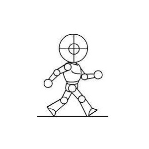
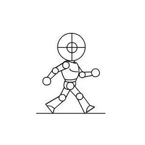

|  |  | |
|---|---|---|
JPG类型 |
PNG类型 |
GIF类型 |
1. JPG（1992年）：使用的一种失真压缩标准方法，24 bit真彩色，内容比GIF丰富，不支持动画、不支持透明色。JPEG的压缩方式通常是破坏性资料压缩（lossy compression）,意即在压缩过程中图像的品质会遭受到可见的破坏。一张图片多次上传下载后，图片逐渐会失真。 优点 2 2. JPEG/JFIF是最普遍在万维网（World Wide Web）上被用来储存和传输照片的格式。JPEG在色调及颜色平滑变化的相片或是写实绘画（painting）上可以达到它最佳的效果。在这种情况下,它通常比完全无失真方法作得更好,仍然可以产生非常好看的影像（事实上它会比其他一般的方法像是GIF产生更高品质的影像,因为GIF对于线条绘画（drawing）和图示的图形是无失真,但针对全彩影像则需要极困难的量化）。 缺点 3 3. 它并不适合于线条绘图（drawing）和其他文字或图示（iconic）的图形,因为它的压缩方法用在这些图形的型态上,会得到不适当的结果； |
PNG（1996年）：格式是无损数据压缩的,PNG格式有8位、24位、32位三种形式,其中8位PNG支持两种不同的透明形式（索引透明和alpha透明）,24位PNG不支持透明,32位PNG在24位基础上增加了8位透明通道（32-24=8）,因此可展现256级透明程度。 优点 * 支持256色调色板技术以产生小体积文件 * 最高支持48位真彩色图像以及16位灰度图像。 * 支持Alpha通道的半透明特性。 * 支持图像亮度的gamma校正信息。 * 支持存储附加文本信息,以保留图像名称、作者、版权、创作时间、注释等信息。 * 使用无损压缩。 * 渐近显示和流式读写,适合在网络传输中快速显示预览效果后再展示全貌。 * 使用CRC循环冗余编码防止文件出错。 * 最新的PNG标准允许在一个文件内存储多幅图像。 缺点 但也有一些软件不能使用适合的预测,而造成过分臃肿的PNG文件。 |
它的色彩效果最低， 体积小，有着极好的压缩效果，支持动画，并且支持透明效果。 如果你的图片只有很单调的色彩，没有渐变色，那么选GIF最好不过了，它的大小只有2KB，节省了资源。 |
作者：湘府英才小学 张三 |
|---|
版权所有·盗版必究 copyright@2020/12/31 |